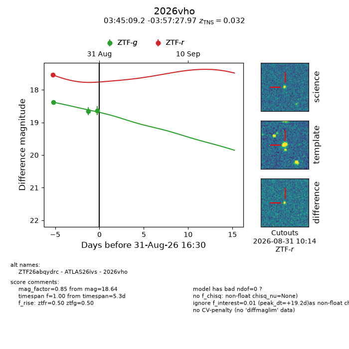
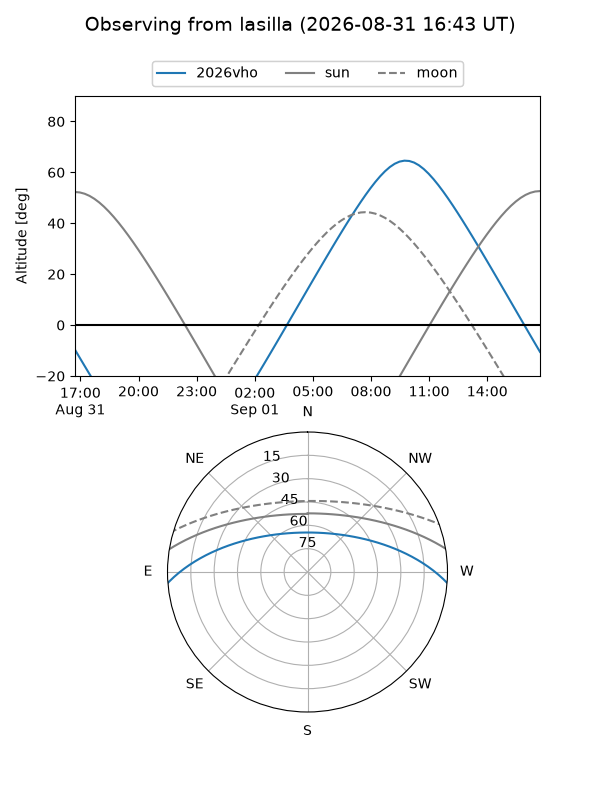
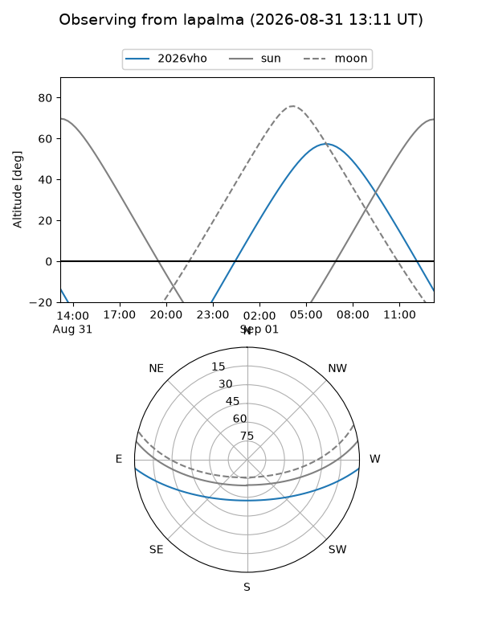
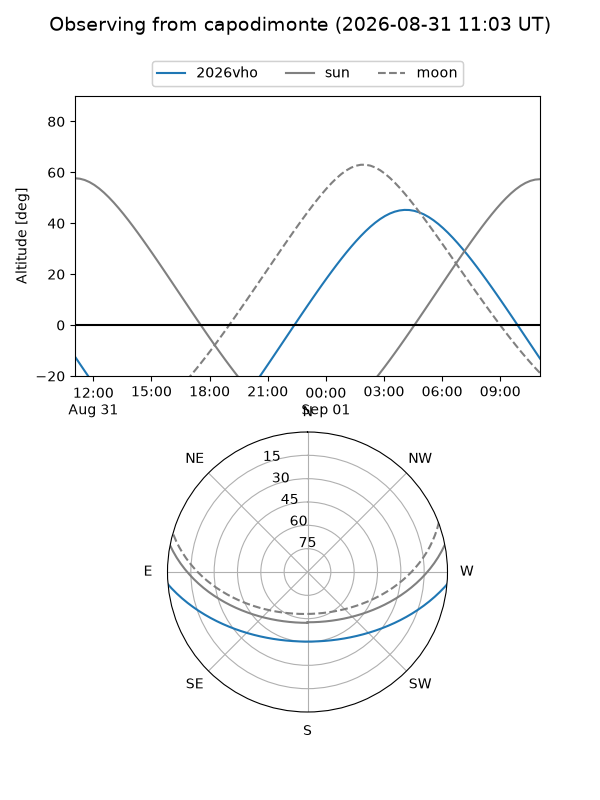
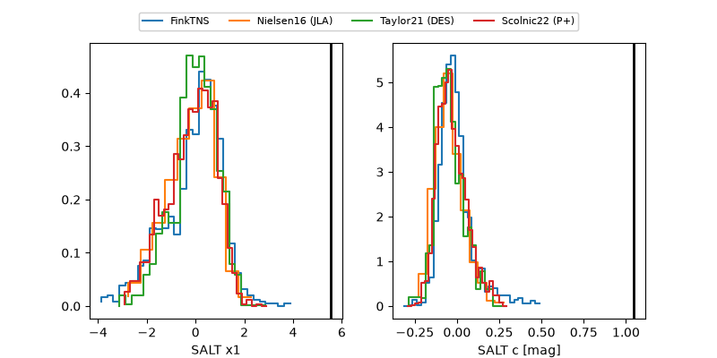

2026vho
Target 2026vho at 2026-08-31 16:32
Aliases and brokers:
FINK-ZTF: ztf.fink-portal.org/ZTF26abqydrc
Lasair-ZTF: lasair-ztf.lsst.ac.uk/objects/ZTF26abqydrc
ALeRCE-ZTF: alerce.online/object/ZTF26abqydrc
YSE-PZ: ziggy.ucolick.org/yse/transient_detail/2026vho
TNS name: wis-tns.org/object/2026vho
Direct TNS query: direct search
alt names
ZTF26abqydrc (ztf,fink_ztf)
2026vho (tns,yse)
ATLAS26ivs (atlas)
Coordinates:
equatorial (ra, dec) = 56.2884,-3.95777
equatorial (HMS+DMS) = 03:45:09.22,-03:57:27.97
galactic (l, b) = (191.5202,-42.55246)
Flags:
TNS type: SN Ia
TNS redshift: 0.0320
peak dt: +19.2
Photometry:
last ztfg=18.64, ztfr=17.54
3 ztfg, 1 ztfr detections
Lightcurve

Visibility



Additional plots
